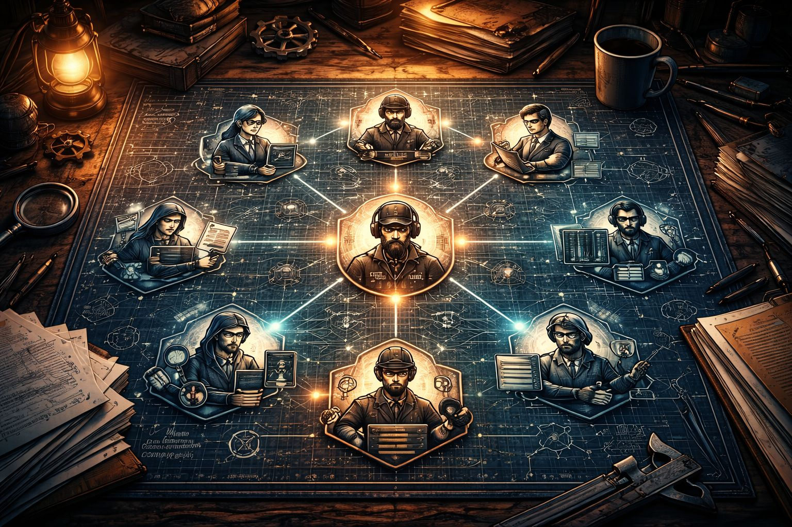

It didn’t start with a grand plan.
It started with me staring at my Downloads folder — the one that quietly turns into a junk drawer for your whole digital life. Random files you grab once, use once, and forget. Installers. Reference images. Exported bits and pieces. Audio snippets. Screenshots. PDFs you meant to read. PDFs you did read. PDFs you swore you’d organise “later”.
I was trying to clean it up properly. Delete what I didn’t need. Rename what was worth keeping. Sort things into folders so my future self wouldn’t hate me.
And I had a simple idea: “I’ll make a PDF folder.”
That should’ve taken five minutes.
But you know how it goes.
You move one PDF… then you realise the filename is nonsense. So you rename it. Then you find another PDF and think, “Oh yeah, I should keep that.” Then there are three versions of the same thing. Then there are files you can’t even remember downloading. Then you start opening things “just to check”.
Next thing you know, a couple of hours is gone.
Not because it’s hard work — but because it’s slow work. The kind of work that drains your energy without giving you anything back.
And right there, in the middle of that messy little mission, I had a thought that hit me like a spark:
Why am I doing this manually?
So I did what I always do when something feels inefficient — I went hunting. A bit of internet discovery, a few late-night reads, a couple of threads and tutorials…
…and I discovered something that changed the whole direction of my life.
You can automate this.
Not with some expensive corporate software. Not with a complicated system. With Python.
So I learned just enough Python to be dangerous.
I wrote a small script that could rename files in bulk, sort them into folders, and apply rules like a tiny digital factory line. It wasn’t perfect, but it worked — and the feeling was electric.
I didn’t just clean up files.
I bought time back.
Then the next thought came immediately — the one that started the whole journey:
If I can write a script to organise my files… wouldn’t it be better if I could just tell an agent to do it?
If I could say, “Clean this folder. Sort the PDFs. Delete the rubbish. Keep the useful stuff,” and it just handled it?
That’s where Rustwood’s Journal really begins.
Because what started as “clean up Downloads” turned into a much bigger mission:
Merge music and technology to build superior coaching and automation — so I have more time, more freedom, and a cleaner life.
The early days were rough.
Not because I lacked motivation — but because building this kind of system is like building a workshop while you’re also trying to do the work inside the workshop. You don’t just need a hammer. You need a bench. Lights. Storage. Power. A process.
At first, the agent was basically a bright apprentice with no tools. It could chat, sure… but it couldn’t do anything real in the world.
So I gave it tasks. Then tools. Then permissions. Then more tools.
I chased that feeling we all chase when we build something new:
“If I just add this one more capability, it’ll finally work.”
Sometimes it did.
Sometimes it absolutely didn’t.
There were nights where I’d spend hours chasing one small issue — a misconfigured path, a permission mismatch, a gateway not running, an integration that worked yesterday and failed today.
And the worst part isn’t the bug itself.
It’s the mental tax: the constant context-switching between builder brain, debugger brain, admin brain, and creative brain.
That’s the real reason most people quit projects like this.
Not because they can’t do it.
Because it starts stealing the exact thing they were trying to protect: time.
But I didn’t give up.
And eventually the wins started landing — not “nice chat” wins, but real work:
The agent could check emails.
It could connect to services.
It could create documents.
It could generate web pages.
It could move information from one place to another without me babysitting every step.
Once that started working, something clicked.
This wasn’t just an assistant anymore.
This was the beginning of an infrastructure — a workshop where work could get done even when I wasn’t in the mood, wasn’t fully focused, or wasn’t available.
But there was still a hidden problem I didn’t fully understand yet.
As the system got better, I kept stacking skills onto the same agent.
And it worked… until it didn’t.
Because the more skills I added, the more unpredictable it became. Not in a dramatic way — in a subtle way that’s worse:
It would pick the wrong tool occasionally.
It would answer like an engineer one minute and a marketer the next.
It would lose the thread of what mattered and start doing “technically correct” but useless work.
It began to feel slightly different day to day — like the personality was getting jumbled.
That’s when I realised a truth most builders learn the hard way:
A single agent with too many skills doesn’t become powerful — it becomes noisy.
Harder to verify.
Harder to trust.
Harder to scale.
Then came what I call the “secret upgrade”.
I discovered a new way to structure the whole thing — not as one super agent doing everything, but as a crew of specialist agents, each with a narrow intent.
Instead of one overloaded brain, I built something closer to a real workplace:
One agent drafts pages.
One agent builds them properly.
One agent writes copy.
One agent researches.
One agent handles ops and backups.
One agent handles deployments.
One agent handles auth and identity.
And there’s a final overseer who reviews before anything gets merged.

When I implemented that, the system stopped feeling like a chaotic experiment and started feeling like an engine.
Suddenly:
Outputs became consistent.
Tasks became predictable.
Problems became containable.
Progress sped up without losing control.
That’s the moment I realised:
I’m not building an agent. I’m building an employee workflow.
Now I’ve got a digital team inside OpenClaw — and each “person” has a clear job:
Howard is the Foreman — final overseer, reviewer, merge gate.
Cora drafts HTML layouts and page structure.
Felix turns drafts into production builds, and handles deeper coding when assigned.
Harper writes conversion copy — hooks, offers, CTAs.
Scout browses the web and returns sources with actionable insights.
Briggs handles backups, triage, and operational health checks.
Juno standardises UX and audio-player consistency.
Gideon handles OAuth and identity cutovers.
Ada handles databases and migrations.
Mason hardens CI/CD and deployment reliability.
Iris turns transcripts and long content into summaries and content angles.
Each one stays narrow.
Each one has a small toolset.
Each one has a definition of done.
And that’s the difference between “AI chaos” and “AI workforce”.
Why am I doing all this?
Because the end goal isn’t a clever dashboard or a fancy bot.
The end goal is voice.
I’m building systems to coach my own voice at a higher level — and eventually help other people too.
I want a workflow where I can analyse vocals properly:
Pitch tracking.
Waveforms.
Crest factor.
RMS.
And structured feedback generated by AI from real data.
Not vague “nice singing” comments — real, useful coaching feedback that shows me:
What changed.
What improved.
What to train next.
How to track progress like an athlete.
That’s the merge of music and technology that excites me:
Better coaching.
Measurable progress.
Less guessing.
And alongside that, I want the same system to handle the business layer:
Draft emails to clients and prospective clients.
Organise notes and plans.
Prepare social posts.
Keep the admin moving without consuming my day.
Because the goal isn’t “more automation”.
The goal is more life.
More time for music.
More freedom.
More consistency.
More progress.
The next phase I’m genuinely excited about is imagery.
Not random pictures — designed visuals that support the brand, support posts, support pages, support offers. Once image generation is integrated cleanly into the crew, it becomes one more part of the workflow: content and visuals together, faster output, brand consistency, without sacrificing taste.

That’s the Rustwood point of all this:
Keep the soul. Automate the grind. Earn back freedom.
If you’re building an agent system, don’t chase “smart”. Chase narrow intent, clear KPIs, skill caps, clean handoffs, merge gates, and shared memory rules. That’s how you get autonomy that doesn’t collapse.
If you want to follow the build, Rustwood’s Journal is where I’m documenting it — the wins, the mistakes, and the systems that actually work.